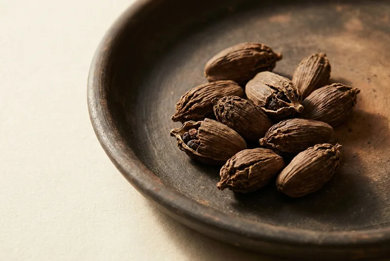

Capacity
How much wet cardamom must one batch accept—and how does that change during harvest?
THE FARMERS
Growing the crop is only part of the story. The decisions behind it matter just as much.
This is a starting point for understanding large-cardamom farming: published context, practical questions, and room for farmers to tell their own stories.
AI-generated landscape illustration. Not a photograph of a documented DHUNERI farm.
01 / FARMER VOICES
Field Account · Taplejung, Nepal
Til Bahadur’s Hearth.
Thirty-one years tending the fire.
On fifteen ropani of steep slope above the Kabeli river basin in Taplejung, Til Bahadur Limbu has cultivated large cardamom beneath native Himalayan alder shade since 1995. When autumn pods turn deep maroon, they move immediately to his stone bhatti, where slow alder-wood smoke cures the harvest over fifty continuous hours.
“When you tend the fire through the night, you are not just drying spice. You are finishing what the mountain started.”
How farmer accounts are recorded and verified02 / THE WORK BEHIND THE CROP
Practices vary by place and household.
These five stages help frame what field research needs to understand.

BEYOND THE POD
A useful account follows the work—not just the finished spice.
Open each stage below for the context and a question to take into fieldwork.
FAO identifies disease-free saplings and nursery support as part of Nepal’s large-cardamom value-chain work. [2]
How is planting material obtained, and what makes it affordable and reliable?
ICIMOD’s regional work discusses soil condition, water retention, and climate-resilient practices. These are context, not findings from DHUNERI field interviews. [3]
What changes in water, soil, and weather are farmers noticing, and how are they responding?
Harvest timing, available labour, and movement of wet capsules are practical topics for inquiry. No farm-specific timings or labour figures are asserted here.
Who does the work, when does it happen, and what limits movement between harvest and drying?
FAO identifies post-harvest infrastructure as an area of development. For this page, fuel, time, capacity, and operator attention are questions to investigate—not measured results. [1]
What makes a drying method workable at the site where it will actually be used?
FAO reports that almost all Nepalese large-cardamom exports go to India. National export context does not establish a particular farmer’s buyer, price, or income. [1]
Which buyers, quality signals, and payment arrangements shape the sale?
Open a stage to read its context and field question.
03 / QUESTIONS THAT MATTER
Performance in a controlled test is only part of the story. A useful method must also make sense in daily operation.
These are proposed research questions, not conclusions or promises of an existing field programme.
How much wet cardamom must one batch accept—and how does that change during harvest?
Which resources are available reliably at the drying site, and when are they scarce?
How often must someone feed, turn, check, or monitor the batch?
What purchase or construction cost is realistic, and who would carry it?
How do fuel, power, labour, and maintenance costs compare in actual use?
Can parts and repair skills be found nearby when something fails?
How does the operator decide a batch is ready—and what can be measured?
Can different operators reach similar results under changing conditions?
Which quality signals influence acceptance and price, and how are they assessed?
04 / THE WIDER PICTURE
Published sources place the crop within a wider system of growing conditions, post-harvest needs, and market access.
Sector context—not a description of every farm, and not DHUNERI field findings.
99%
FAO’s market brief reports that almost all Nepalese large-cardamom exports go to India. Keep this figure with its publication context; it is not a live market reading. [1]
05 / HOW WE TELL THE STORY
A person is more than a profile.
Before a farmer story is published, the following checks should be completed and recorded.
Confirm permission for the story, each photograph, and any audio. Agree how the person and location are identified.
Record the interview date and language. Explain translations and distinguish quotations from editorial interpretation.
Give the participant an opportunity to review their representation and establish a clear path to request a correction or removal.
DHUNERI adheres to verified informed consent standards across all field documentation.
06 / THE READING BEHIND THIS PAGE
Three institutional references.
Publication dates stay attached to the evidence.
Market Intelligence Series · 2025 publication, as cited on the current site
Used for export concentration and post-harvest context based on FAO market intelligence reports.
21 October 2024 · OCOP update
Used for disease-free saplings, nursery support, and Good Agricultural Practices. The article also records Nepal’s 2022 OCOP selection.
6 June 2022 · Regional adaptation context
Used for climate, soil, and livelihood context. Historical programme outcomes are not presented as present-day DHUNERI results.
References spot-checked . Farmer-specific claims require separate interviews, records, and permission.